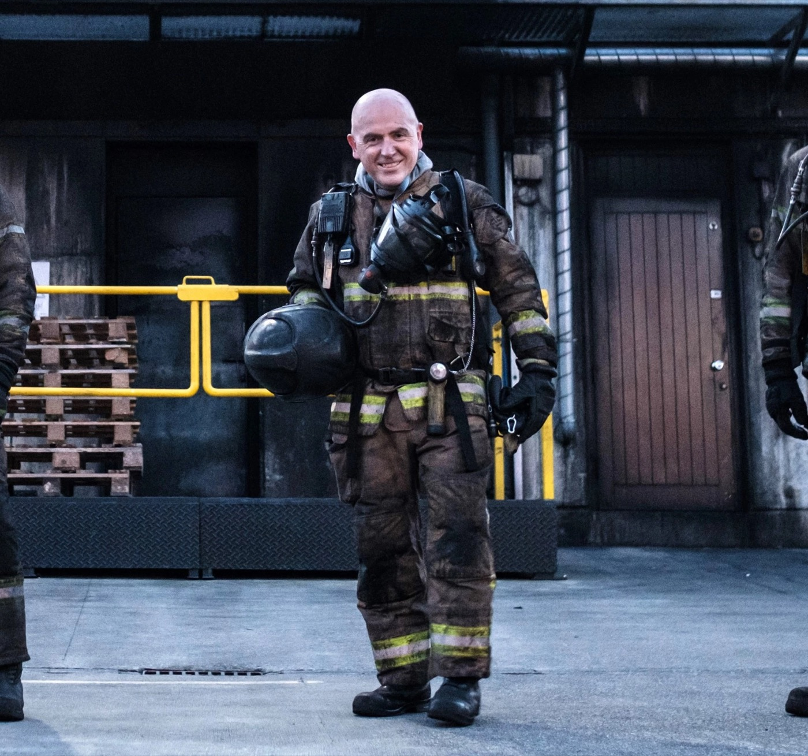
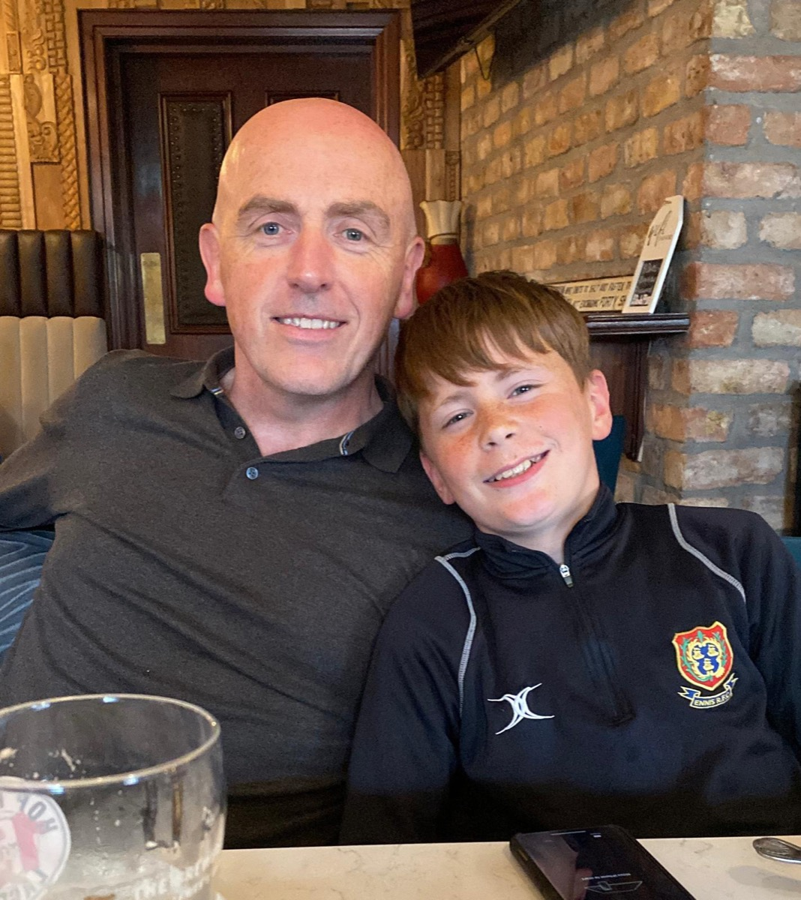

Chartered Engineer
DOCON Fire Safety Engineering
Denis O'Connell, BE C-Eng
Fire Safety Certificates, Disability Access Certificates, fire safety assessments and management systems. Chartered Civil Engineer and retired Senior Fire Officer with over 30 years' experience in statutory fire safety, including 18 years reviewing applications for a County Fire Authority.

Services
Complete fire safety consultancy, under one roof
From statutory certificates to management systems and training — practical solutions that satisfy the regulations and work with your building.
-
01
Fire Safety Certificates
Full design, preparation and submission of your Fire Safety Certificate application, engineered to fit your building layout.
Learn more -
02
Fire Safety Assessments
Assessments of existing premises carried out to the national Code of Practice for Fire Safety Assessments (2022).
Learn more -
03
Disability Access Certificates
DAC applications with access solutions that meet Part M requirements while working with your building's layout.
Learn more -
04
Fire Safety Review
An independent review of your existing fire safety elements to ensure they add up to one cohesive, effective system.
Learn more -
05
Fire Safety Management
Set-up or review of your Fire Safety Management system so it is appropriate for your premises and genuinely easy to run.
Learn more -
06
Manager Training
Practical fire safety management training that equips your managers to run an effective system with confidence.
Learn more

The principal
Three decades on the other side of the desk
Most fire safety consultants have only ever prepared applications. Denis O'Connell spent 18 years as Head of the Fire Prevention Section for a County Fire Authority — the office that decides them. That perspective means submissions built to be approved, not argued over.
- Chartered Civil Engineer (BE C-Eng) with postgraduate study in Fire Engineering
- Approximately 1,900 Fire Safety Certificate applications processed
- 24+ years attending major incidents as a Senior Fire Officer
- Served on national committees shaping Irish fire safety practice
Good fire safety design isn't about ticking boxes. It's about solutions that protect life and work with the building you actually have. Denis O'Connell — Principal, DOCON Fire Safety Engineering
Have a project that needs a fire safety expert?
Whether it's a new build, a change of use, or an existing premises that needs assessing — get clear, practical advice from day one.